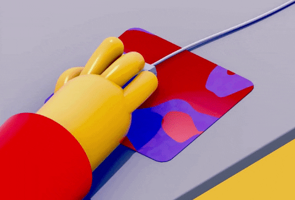

The World Wide Web spawned a lot of fortune for many businesses investors. This reshaped how people worked , shopped, and even traveled . John Hollowman, a journalist tells how the Internet era evolved. More importantly he describes the browser wars. This is during the time competitive computer companies battled in this new developing technological industry. The World Wide Web was created in 1989 by Englishman scientist Tim Berners Lee. In the past there were very few websites and the Internet was much more complex. Finding new information and communication was much harder than now.
A young college student named Marc Andreessen formulated the idea of inventing the web. Mainly college students and researchers liked to use the Internet for their projects. He and some of his college friends were smart enough to make programs which enhanced the visual aspect of surfing the web. This included images , audio , and new interesting things. This would be known to be as the first graphical web browser . In 1993 , Andreessen's team made Mosaic Online and It was their first beta browser. This went for 100 users to a million quicker than expected. However, more money was needed to take this idea to the next level.

Jim Clark, a big time investor was interested in Mosaic so he took the opportunity to invest. He believed in interconnecting media with digital tech so he believed the internet would develop that convergence. Clark invested a third of his net worth. In 1994 Clark and Andreessen started to team up to develop this new software. They also had to recruit more members for this company. Interestingly Bill Gates was not sure about their new concept. Gates owned one of the most profitable computer companies named Microsoft. This company generated PC operating systems which placed them at the forefront of the computer industry. They developed the Microsoft network which was a huge network that contained a lot of information. For other people to use this network they had to pay Microsoft. Many believed they would succeed . Fun fact , Gates dropped out of Harvard and became one of the most influential computer techs. Almost 90% of the world was using Microsoft software at that time.
At the peak of this company's success they raked in billions. Employees were even able to buy stock options because of how successful the company was doing and some even became millionaires. Opposing companies could not defeat Microsoft. However, Clark and Andreessen were developing a new software that would create a roadblock for Microsoft. Their software was the fastest any computer scientist has ever seen and they called it Netscape Communications. This became the new communication and commerce for generations to come. The web was becoming popular day by day. Netscape was worried another company would release a similar concept before them so they were urgent. To point out, Gates was unconfident in their algorithm on creating the web and so were other companies. Netscape's new web browser Navigator was released. It was an instance of a successful project . Millions began to use their browser and Microsoft began to feel the competitive pressure. Gates initiated this browser war because of the success he saw Netscape achieved rapidly. To point out , Microsoft members and Netscape had meetings and debating on how they could work together. Thanks to bowser wars this evolved the internet into what we use now.